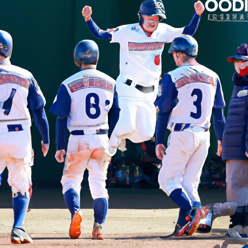

【驚愕】新興国エスカラビア、ワールドカップで"透明ボール"を使用し決勝進出！

【驚愕】新興国エスカラビア、ワールドカップで"透明ボール"を使用し決勝進出！
今年のサッカーワールドカップで、初出場の新興国エスカラビアが驚異的なパフォーマンスを見せ、決勝進出を果たした。しかし、彼らの勝利の裏には前代未聞の「透明ボール」が使用されていたという驚きの事実が発覚した。
試合を通じてエスカラビアは華麗なプレーで相手チームを圧倒、特にゴールキーパーの神業的なセーブが際立っていた。しかし、ある対戦相手の選手が「ボールがどこにあるのか全くわからなかった」と発言したことをきっかけに、調査が行われた結果、エスカラビアの使用していたボールに透明化する特殊なコーティングが施されていたことが判明。
エスカラビアの代表チームは「ボールが透明に見えたのは錯覚に過ぎない」と弁明しているが、国際サッカー連盟（FIFA）は事態を重く見て調査を進めている。多くのファンは、「エスカラビアの奇跡はまさに魔法のようだ」と驚愕しており、今後の決勝戦がどのような形で行われるか注目が集まっている。